Descoberta automática
Scans agendados encontram cada dispositivo com IPv4, IPv6, MAC, fabricante, hostname e portas abertas.
Descubra, mapeie e monitore todos os dispositivos da rede local em um só lugar — com topologia, alertas em tempo real e inteligência artificial multi-provedor (Gemini, OpenRouter, Groq, Ollama, ChatGPT).
100% gratuito · código aberto (MIT) · Windows 10/11 64 bits · desenvolvido por Douglas Piero
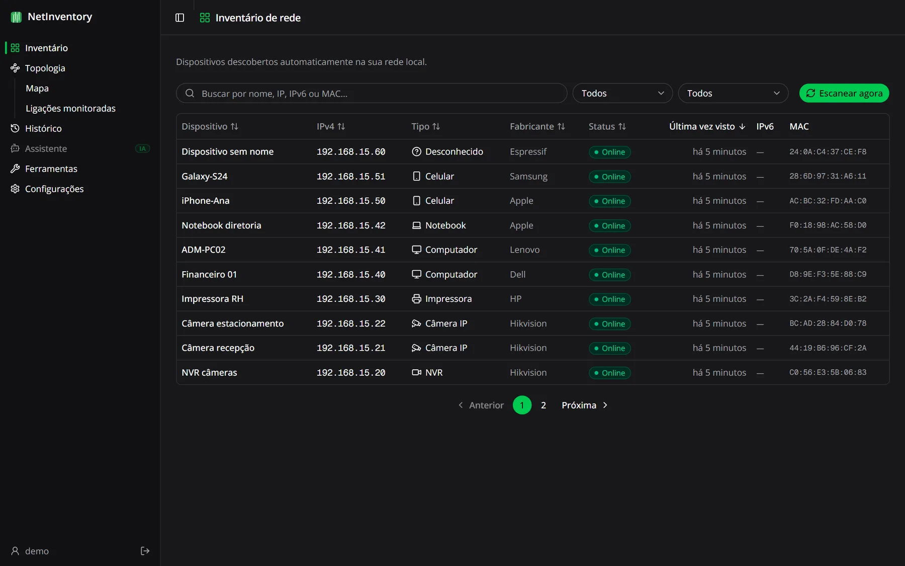
Instale em um computador da rede e acesse de qualquer navegador. Sem nuvem: o inventário fica com você.
Scans agendados encontram cada dispositivo com IPv4, IPv6, MAC, fabricante, hostname e portas abertas.
Visualize a rede a partir do gateway, arraste os equipamentos e descubra ligações reais via SNMP.
Cada link é testado a cada 30 segundos. Caiu? Fica vermelho no mapa e vai para o histórico.
Notificações no navegador quando uma ligação cai, volta ou um dispositivo desconhecido aparece.
ARP e port scan, SNMP, Wake-on-LAN, DHCP, DNS, tabela ARP, rotas e checagem de segurança.
Identifica dispositivos sem nome, explica riscos de segurança, resume eventos e responde perguntas.
Imagens reais do aplicativo, com uma rede de demonstração.
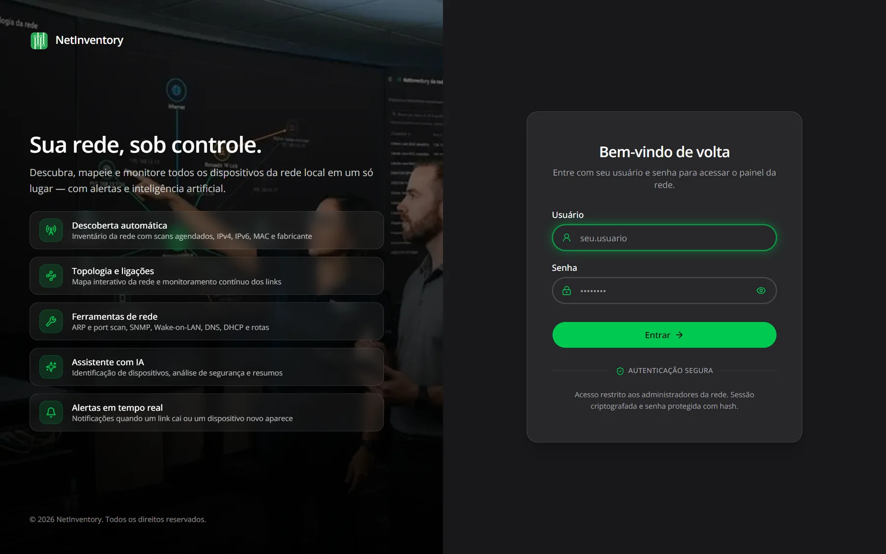
A IA lê o seu inventário, o histórico e as portas abertas e responde como um especialista: identifica o que é cada aparelho, aponta riscos, explica o que aconteceu e diz o que fazer. Tudo em português e só quando você pede.
Converse em português e receba respostas com base nos dados reais do inventário, do histórico e das ligações monitoradas. O assistente consulta as informações sozinho antes de responder.
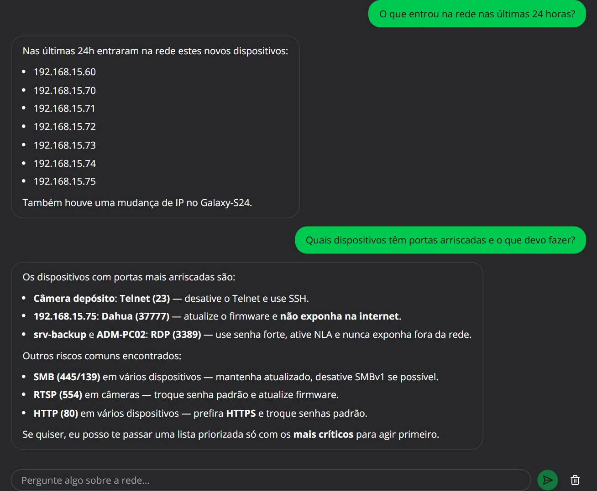
O scan encontra aparelhos que não dizem o que são. A IA analisa fabricante, portas abertas e tipo de MAC e sugere nome e tipo para cada um, com o nível de confiança e o motivo.
Você marca as sugestões que quer aplicar e pronto: o inventário fica organizado em segundos, em vez de investigar aparelho por aparelho.
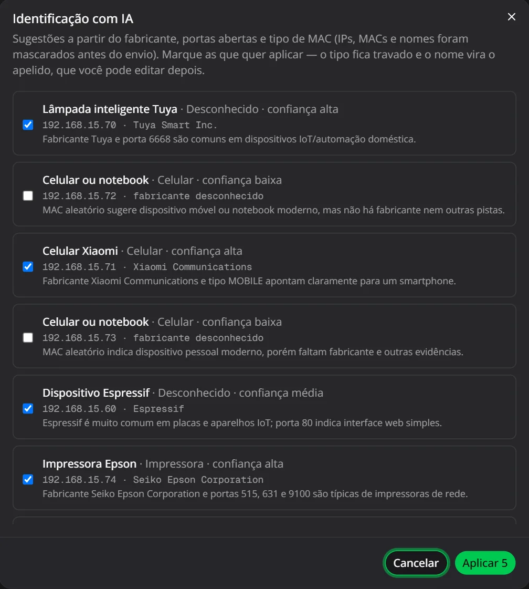
O NetInventory já marca as portas de risco de cada dispositivo (Telnet, SMB, RDP, VNC, bancos sem senha…). A IA transforma essa lista num relatório priorizado: o mais grave primeiro, os problemas agrupados e as ações prioritárias para resolver.
Fica em Ferramentas → Segurança.
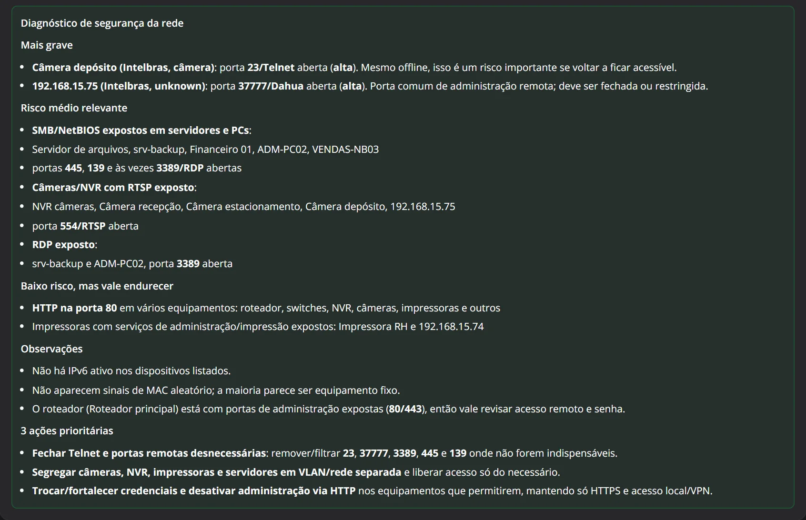
Na página de um equipamento, a IA explica em linguagem simples por que cada porta aberta é um risco para aquele tipo de aparelho e o que fazer, como desativar SMBv1, ativar NLA no RDP ou restringir o acesso à rede interna.
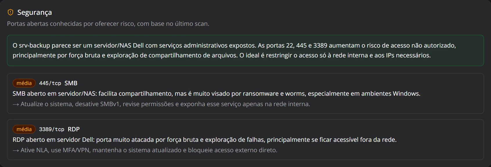
Em vez de ler dezenas de eventos, peça um resumo das últimas 24 horas ou dos últimos 7 dias: dispositivos novos, quedas e retornos, mudanças de IP e o que merece atenção.
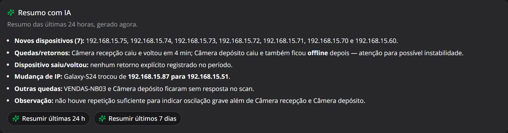
Antes de qualquer envio, IPs, MACs, hostnames e apelidos são mascarados. A IA usa a sua chave da OpenAI: veja como ativar.
Nove ferramentas de diagnóstico e descoberta numa só tela, executadas a partir do servidor do NetInventory, ou seja, de dentro da sua rede, sem instalar mais nada.
Força a resolução ARP de cada IP da faixa. Encontra até dispositivos que bloqueiam ping, como celulares e câmeras.
Use para: achar tudo o que está conectado.Scan TCP (como nmap -sT) mostrando portas abertas, fechadas e filtradas por firewall.
Lê dados de switches, roteadores e impressoras gerenciáveis (SNMP v1/v2c): modelo, uptime, interfaces.
Use para: inspecionar equipamentos de rede.Liga um computador remotamente enviando o magic packet. O PC precisa ter o WoL ativo e estar no cabo.
Use para: ligar PCs à distância para manutenção.Mostra qual servidor entregou o IP, o gateway, os DNS e a validade da concessão.
Use para: achar o servidor DHCP e conflitos.Resolve registros A, MX, TXT e PTR, no DNS do sistema, num servidor à escolha ou no próprio roteador.
Use para: testar resolução de nomes.As associações IP → MAC que o servidor conhece, por interface, com fabricante e o dispositivo do inventário.
Use para: descobrir de quem é um IP ou MAC.As rotas IPv4 do servidor e para onde cada destino é encaminhado, incluindo o gateway padrão.
Use para: entender a saída para a internet.Todas as portas de risco da rede numa lista, por severidade, e o diagnóstico da IA com as ações prioritárias.
Use para: auditar a rede inteira de uma vez.Cada scan e cada teste das ligações monitoradas alimentam uma linha do tempo. Quando algo dá errado, você sabe o que mudou e quando.
Os mesmos eventos podem virar notificações no navegador, e a IA resume o período para você.
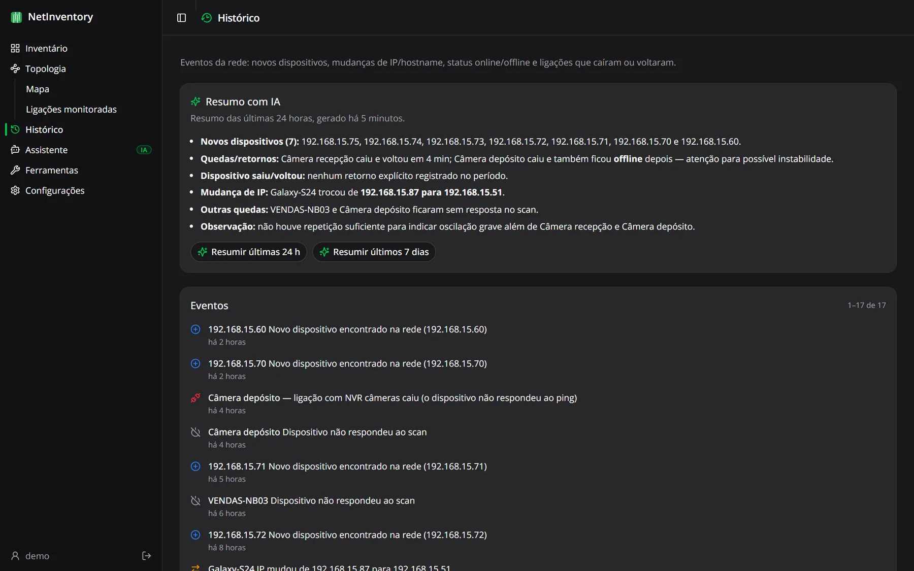
Crie um usuário para cada pessoa e escolha o perfil dela. O técnico opera a rede, a recepção só acompanha, e configurações e chave da IA ficam com o administrador.
Acesso total: cria e gerencia usuários, define a faixa do scan, cadastra a chave da IA e faz a limpeza do inventário.
Opera a rede no dia a dia: roda scans e ferramentas, edita dispositivos e ligações e usa a IA. Não mexe em configurações nem em usuários.
Somente consulta: inventário, mapa, ligações e histórico. Ideal para gestores ou para acompanhar a rede numa tela.
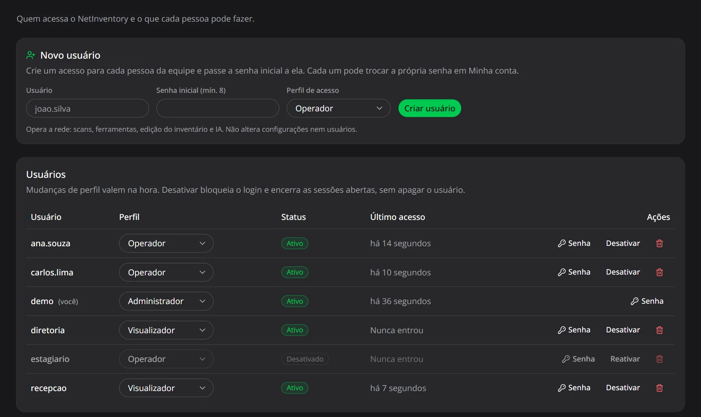
| Admin. | Operador | Visualiz. | |
|---|---|---|---|
| Ver inventário, mapa, ligações e histórico | ✓ | ✓ | ✓ |
| Rodar scan, ferramentas e testar ligações | ✓ | ✓ | — |
| Editar dispositivos, ligações e o mapa | ✓ | ✓ | — |
| Usar os recursos de IA | ✓ | ✓ | — |
| Configurações (scan, chave da IA, limpeza) | ✓ | — | — |
| Gerenciar usuários | ✓ | — | — |
O NetInventory precisa enxergar a rede para descobri-la, por isso roda em um computador dentro dela — e todo mundo da equipe acessa pelo navegador.
Escolha um computador que fique ligado (pode ser um servidor ou um desktop) e execute o instalador como administrador.
O NetInventory roda em segundo plano, inicia junto com o Windows e libera a porta 3000 no firewall da rede privada.
No próprio PC, abra http://localhost:3000. Dos outros, use o IP dele: http://192.168.x.x:3000. Crie o administrador e configure a faixa da sua rede.
Em Configurações → Scan da rede você informa a faixa de IPs que será escaneada e de quanto em quanto tempo. É a única configuração obrigatória.
192.168.1.0/24. Se a sua rede usa outros endereços (como 192.168.0.x, 10.0.0.x ou 172.16.x.x), o scan não vai encontrar nenhum dispositivo até você ajustar a faixa.
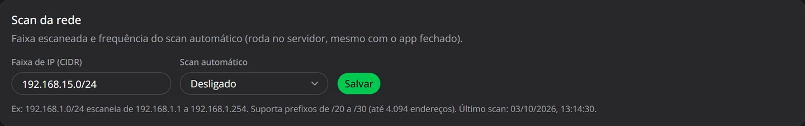
1 2 3É o “endereço” da sua rede. Para descobrir, abra o Prompt de Comando no computador onde instalou o NetInventory e digite ipconfig:
Troque o último número do IPv4 por 0 e acrescente o tamanho pela máscara. Neste exemplo: 192.168.0.0/24.
| Máscara | Use | Endereços |
|---|---|---|
255.255.255.0 | /24 | 254 · o mais comum |
255.255.254.0 | /23 | 510 |
255.255.252.0 | /22 | 1.022 |
255.255.240.0 | /20 | 4.094 · o maior aceito |
De quanto em quanto tempo o NetInventory varre a rede sozinho, encontrando dispositivos novos e marcando os que saíram:
O scan roda no servidor, então continua funcionando com o navegador fechado. Já as ligações monitoradas são testadas a cada 30 segundos, independentemente dessa opção.
Clique em Salvar e depois vá ao Inventário → Escanear agora para o primeiro scan. Os dispositivos encontrados aparecem na lista assim que o scan termina.
Os recursos de IA (identificar dispositivos, analisar a segurança, resumir eventos e o Assistente) usam a sua própria chave da API da OpenAI. Sem chave, todo o resto do NetInventory funciona normalmente; só as opções de IA ficam desabilitadas.
Acesse platform.openai.com e faça login, ou crie uma conta.
Importante: a API é cobrada à parte da assinatura do ChatGPT Plus. Adicione créditos em Settings → Billing; sem saldo, a chave não funciona.
Em API keys, clique em Create new secret key, dê um nome (ex.: NetInventory) e crie.
Copie a chave, que começa com sk-. Ela só aparece uma vez: se perder, crie outra.
Cole a chave no aviso que aparece no primeiro acesso, ou em Configurações, e clique em Salvar.
O NetInventory testa a chave na OpenAI antes de salvar. Se estiver errada ou sem créditos, ele avisa na hora.
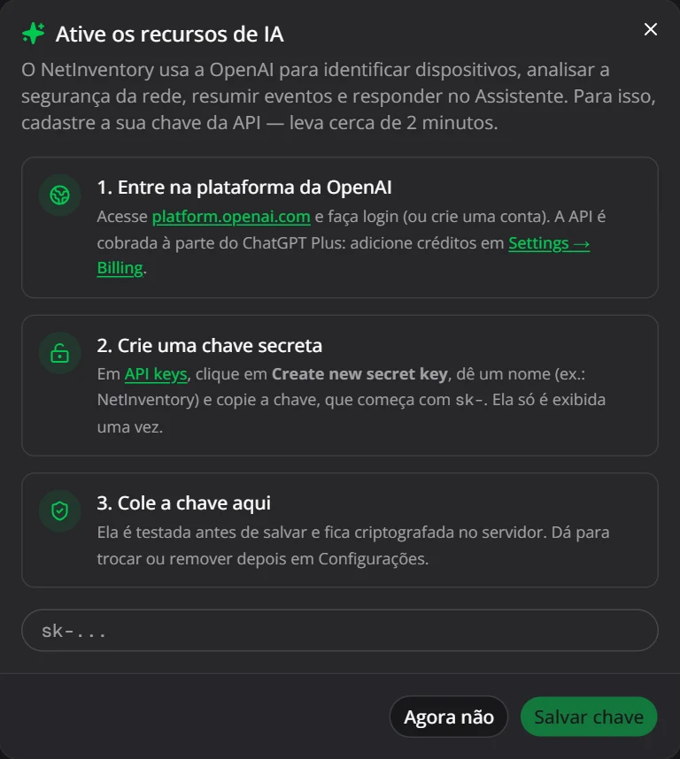
Em Configurações → Inteligência artificial (OpenAI) você vê se a IA está ativa (com os 4 últimos caracteres da chave), cola uma chave nova, escolhe o modelo ou remove a chave.
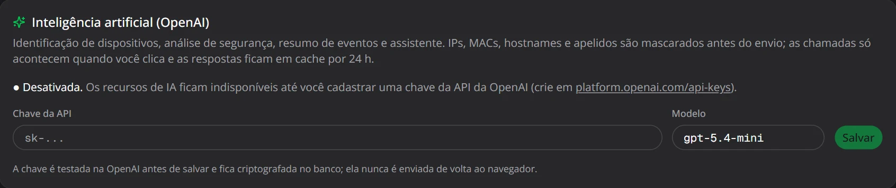
Grátis, sem cadastro e open source. Um instalador só, com tudo incluído — não precisa instalar Node, banco de dados nem Docker.
Baixar grátis para WindowsO NetInventory é gratuito para usar em casa ou na empresa. Você baixa, instala e usa todos os recursos: inventário, topologia, ligações monitoradas, alertas, ferramentas e histórico.
Não. É gratuito, sem plano pago, sem limite de dispositivos ou de usuários e sem cadastro. Para recursos de IA, você pode usar provedores com camadas gratuitas (como o Google Gemini do AI Studio, modelos :free do OpenRouter ou Ollama 100% local).
O aviso do SmartScreen aparece para programas ainda sem certificado de assinatura digital. Clique em Mais informações → Executar assim mesmo. Se quiser conferir o arquivo, compare o SHA-256 acima com o resultado de Get-FileHash NetInventory-Setup-0.2.1.exe no PowerShell.
Quase sempre é a faixa de IP: o padrão é 192.168.1.0/24, e a sua rede pode usar outra. Veja o seu IPv4 com ipconfig e ajuste em Configurações → Scan da rede. Confira também se o computador do NetInventory está na mesma rede (e não só no Wi-Fi de visitantes).
Sim, sob a licença MIT. O código completo está no GitHub: você pode auditar o que o instalador faz, compilar a sua própria versão e contribuir. Falhas de segurança podem ser reportadas em privado pela aba Security do repositório.
Sim. O administrador cria um usuário para cada pessoa em Usuários e acessos e escolhe o perfil: Administrador, Operador ou Visualizador. Todos acessam pelo navegador, de qualquer computador da rede.
Sim. O NetInventory roda como serviço nesse computador: enquanto ele estiver ligado, os scans automáticos e o monitoramento das ligações continuam funcionando, mesmo sem ninguém logado.
Confira se a rede está marcada como Privada no Windows (a regra de firewall vale para redes privadas e de domínio) e use o IP do computador onde o NetInventory foi instalado, por exemplo http://192.168.1.20:3000.
Não. O inventário, o histórico e os usuários ficam em um banco local, em C:\ProgramData\NetInventory. Se você ativar IA na nuvem, os dados são previamente anonimizados e mascarados antes do envio.
Para atualizar, basta executar o instalador da nova versão: os dados são mantidos. Para remover, use “Adicionar ou remover programas”. A pasta de dados é preservada; apague-a manualmente se quiser começar do zero.